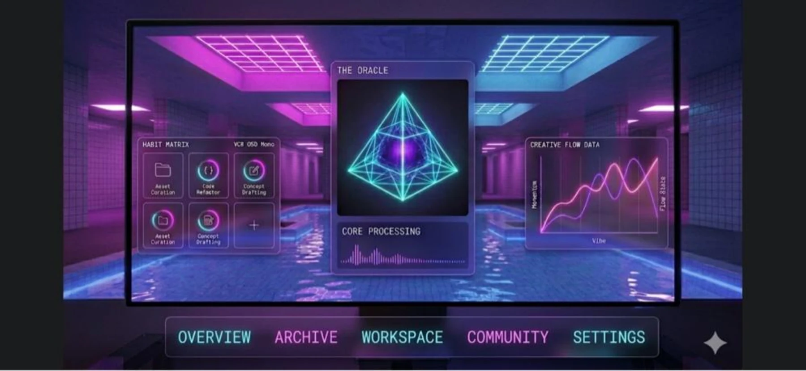

VaporFlow Digital Dashboard
A dark-mode analytics and productivity dashboard built around a vaporwave glassmorphism system. The interface combines a central “Oracle” visualization with a Habit Matrix, Creative Flow Data chart, Core Processing module, and persistent workspace navigation while keeping the neon visual language structured and readable.
From dense analytics to a structured neon workspace
VaporFlow was designed as a responsive, high-performance desktop productivity and analytics dashboard. The project paired a dark vaporwave aesthetic with a glassmorphism system while keeping dense information readable, navigable, and ready for developer handoff.
Four weeks from discovery to handoff
Mapped desktop layout requirements, created low-fidelity grid wireframes, and defined multi-monitor viewing zones.
Established the core vaporwave color tokens and backdrop-blur specifications for the glassmorphism system.
Constructed high-fidelity glass cards, custom data-table components, and responsive chart visualizations.
Handled client revisions, resolved visual-performance issues, and exported final design-token specifications.
Vaporwave, but disciplined
The palette uses saturated neon selectively for interaction, state, borders, and ambient emphasis while dark surfaces and off-white text carry the information hierarchy.
Glassmorphism without the performance drag
Stacking multiple translucent cards with blur(16px) caused frame-rate drops during dashboard scrolling on lower-end hardware.
Protecting legibility inside a neon UI
Early saturated neon text created contrast problems against translucent dark backgrounds, especially for secondary data labels.
Designing around changing requirements
- Created a secondary “Golden Hour Chrome” palette using Champagne Gold (#F4D068) and Burnt Copper (#C85A17).
- Redesigned static data tables into compact, collapsible glass cards with inline filtering for denser real-time order tracking.
A visual system ready for implementation
The final handoff formalized the dashboard’s visual rules into structured tokens and production-ready component specifications.